The people on the road to the throne: where to meet them and the choices they bring.
Pages in this category: 26
- Characters — The people on the road to the throne: where to meet them, what they want, and which choices involve them.
- The Hero — A nameless ember-pilgrim with no memory. The one you play.
- Ida — The lookout on the roofs. For forty winters she was the Warden's eyes. Sharp-tongued, light on her feet.
- Maelis — The Firekeeper. She stands by the shrines, blows the coals alive and knows every pilgrim.
- Tomas the Gravedigger — For a hundred years he has dug graves in a land where no one stays buried.
- Pell the Pilgrim — A loud rival, "the future winner of the Ashfall". A choice in Thornwood.
- Bertram the Baker — Kneads an empty trough and counts loaves. Errand "The Last Loaf".
- Hugo the Bell-Ringer — An old man under the bell for the hanged. Ring the bell and you get a key.
- Marta the Innkeeper — Makes the beds at the Last Lodging and keeps a bowl warm for her son.
- Lucius the Collector — Takes a coin for the crossing of the toll bridge. That's the rule.
- Sister Wren — The youngest bell-sister. Asks for the Bell Clapper after the Bell Matron.
- Brother Anselm — A scribe knee-deep in water. Looks for the page where the poor were written down.
- Mira, the Drowned Novice — A drowned novice singing in the cells — her song makes eyelids heavy.
- Beata the Nurse — Changes the sheets of patients who never die. Her fate depends on the Alter World.
- Elsa, Lady-in-Waiting — Sits by the queen's door with a comb. Asks you to carry it to the garden.
- Jorgen the Gardener — Half bark. Burned the garden gates on the king's orders, then took the trees' side.
- Greta — The twins' mother. Knits a red thread and waits for her husband to come home for supper.
- Jan the Lamp Boy — Guides you through the drifts. He is fifteen — a hundred times over. His life depends on your speed.
- Garrick the Deserter — A loader who walked off the wall. Choice: jam the ballistae or go down.
- Ulf — A deserter in a cage, Garrick's friend.
- The Chaplain of the Oath — The last one who takes the knights' oath. Gives the Blood Oath ring.
- Ulrik the Counter — Reads the names off the swords on the Field and cuts them into stone.
- Siv the Pilgrim — Sure she will sit on the throne and save everyone. Her fate is decided by one conversation.
- Remigius the Treasurer — Has been counting the ash for a hundred years. The count is one coin short.
- Ansgar, Who Sat Down — Walked before Oswin, got almost to the throne, turned — and sat down. He will decide tomorrow.
- The Ashen Double — The hero in a burning cloak. Says aloud what the hero would never say.
Gallery
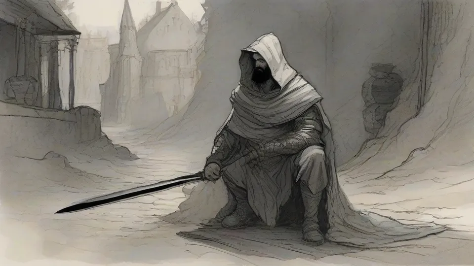
The HeroA nameless ember-pilgrim with no memory. The one you play.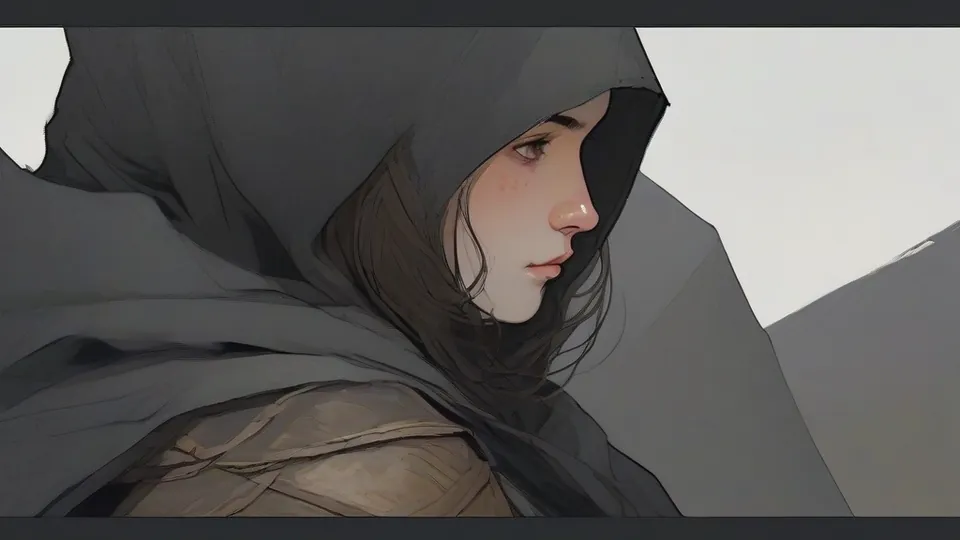
IdaThe lookout on the roofs. For forty winters she was the Warden's eyes. Sharp-tongued, light on her feet.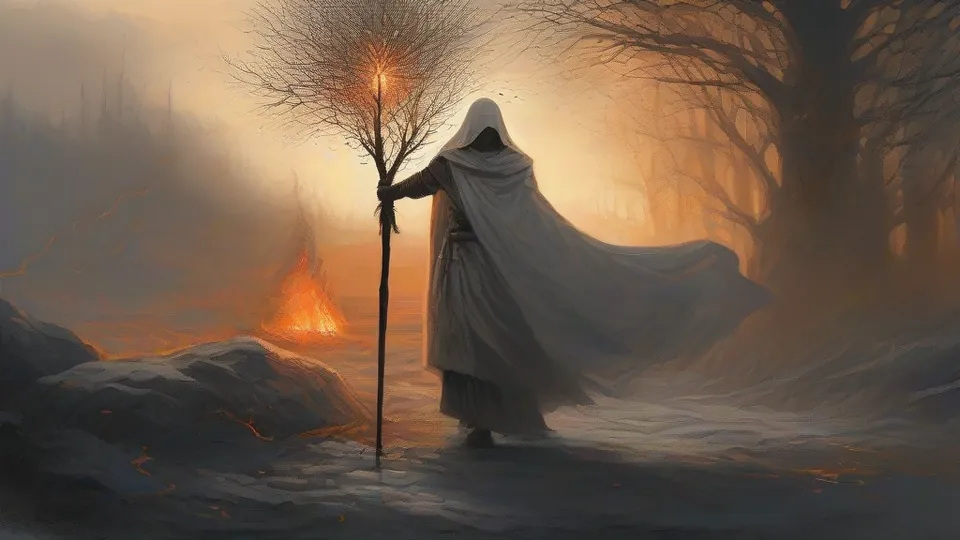
MaelisThe Firekeeper. She stands by the shrines, blows the coals alive and knows every pilgrim.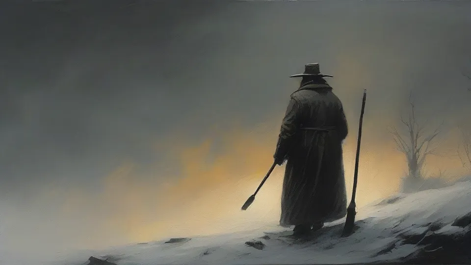
Tomas the GravediggerFor a hundred years he has dug graves in a land where no one stays buried.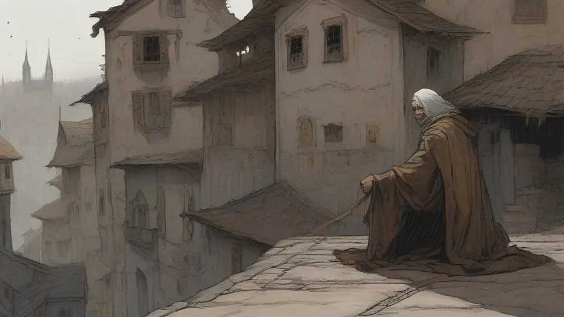
Pell the PilgrimA loud rival, "the future winner of the Ashfall". A choice in Thornwood.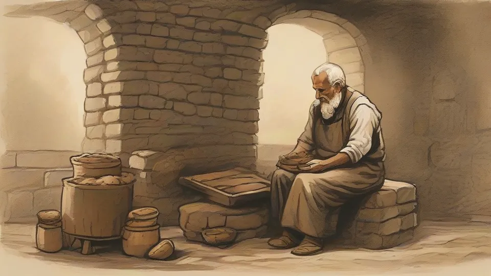
Bertram the BakerKneads an empty trough and counts loaves. Errand "The Last Loaf".Hugo the Bell-RingerAn old man under the bell for the hanged. Ring the bell and you get a key.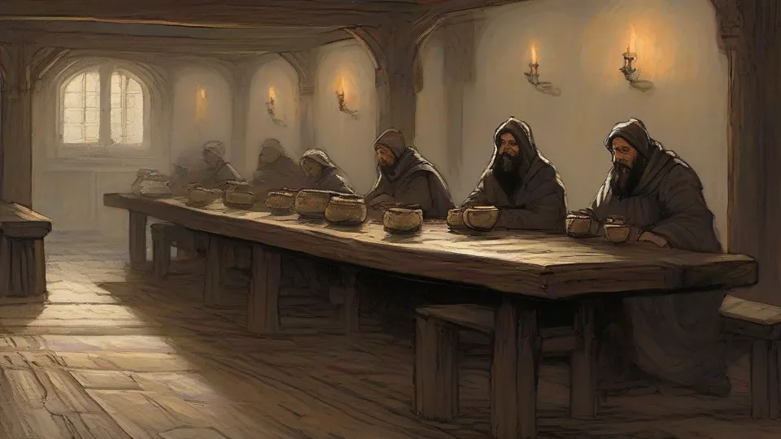
Marta the InnkeeperMakes the beds at the Last Lodging and keeps a bowl warm for her son.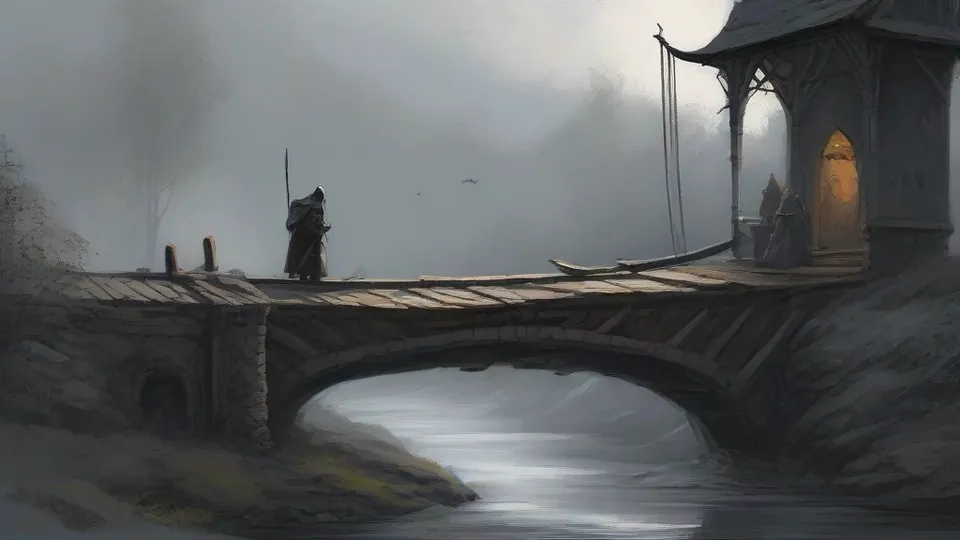
Lucius the CollectorTakes a coin for the crossing of the toll bridge. That's the rule.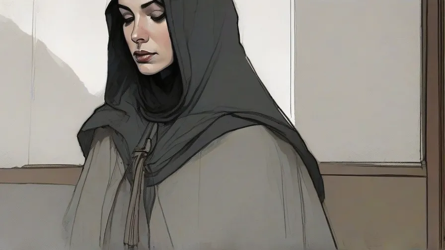
Sister WrenThe youngest bell-sister. Asks for the Bell Clapper after the Bell Matron.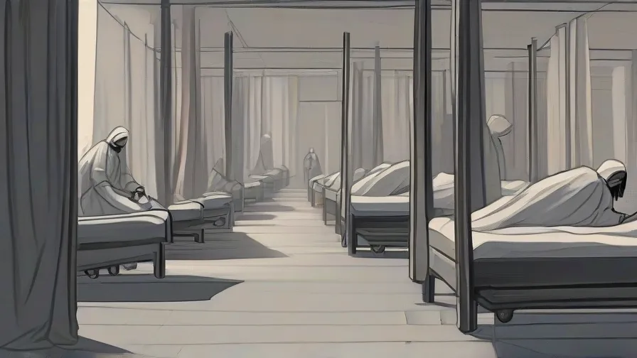
Beata the NurseChanges the sheets of patients who never die. Her fate depends on the Alter World.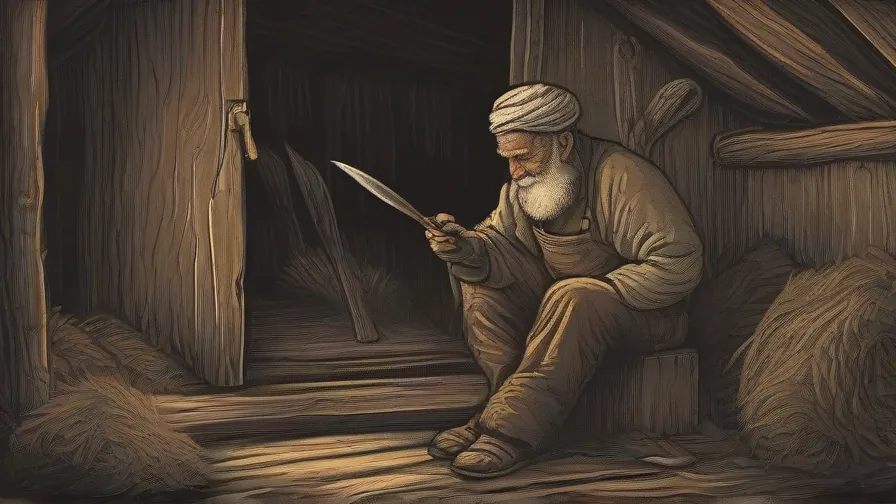
Jorgen the GardenerHalf bark. Burned the garden gates on the king's orders, then took the trees' side.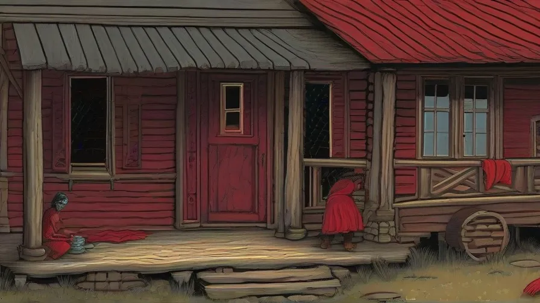
GretaThe twins' mother. Knits a red thread and waits for her husband to come home for supper.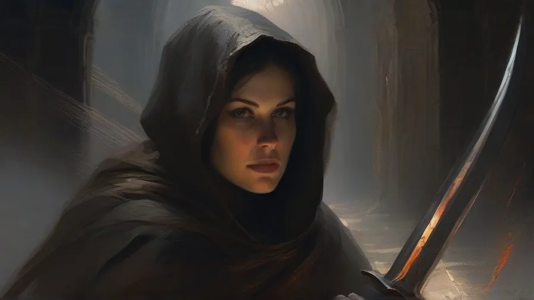
Siv the PilgrimSure she will sit on the throne and save everyone. Her fate is decided by one conversation.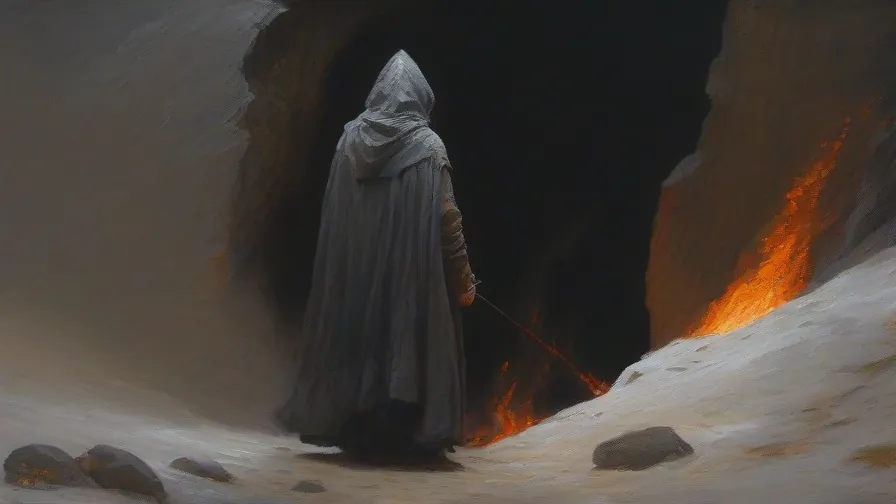
Ansgar, Who Sat DownWalked before Oswin, got almost to the throne, turned — and sat down. He will decide tomorrow.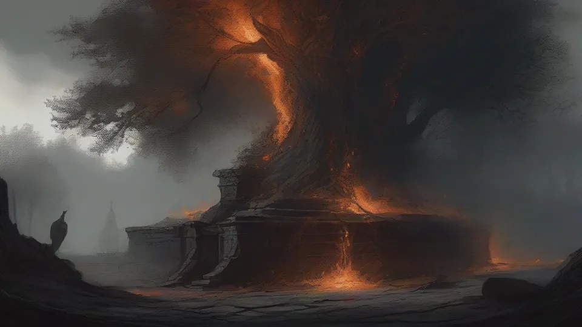
The Ashen DoubleThe hero in a burning cloak. Says aloud what the hero would never say.